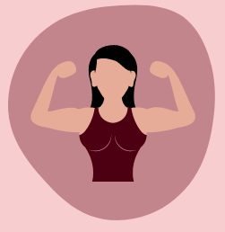

During pregnancy and childbirth, your abdominal and pelvic floor muscles
become weaker. These muscles play an essential role in stabilizing your
body during daily activities and exercise.
After pregnancy, it's crucial to regain strength in these muscles
to prevent issues like incontinence and pelvic organ prolapse in the
future. You can do this through postpartum exercises, which can include
pelvic tilts, Kegels, belly breathing, happy baby pose, and walking.
However, it's essential to be cautious and avoid intense core workouts
too soon after giving birth. These exercises can strain your weakened muscles
and may lead to pain or injury. Gradual and safe exercises are best for
postpartum recovery. Always consult with your healthcare provider before
starting any exercise routine.
Why does exercising matter & the do's and don'ts of doing it
After giving birth, life changes significantly, including daily routines and exercise habits. Postpartum exercise should be approached gradually to allow the body to heal and recover. It offers benefits such as increased energy, better sleep, stress management, weight loss, and regaining strength in abdominal muscles. Returning to a pre-pregnancy workout routine takes time, and it's crucial to be patient and listen to your body. New parents should be realistic and gentle with themselves, understanding that it took time for their bodies to change during pregnancy, and it will take time to feel closer to their pre-pregnancy selves. Fitness can be beneficial for physical and mental well-being, but it's essential to start with gentle exercises and honor the body's journey.
What are postpartum exercises and why are they important? ▼
When can I start exercising after giving birth? ▼
After giving birth, when you can start exercising depends on your delivery and
any complications you might have had. For those with uncomplicated pregnancies
and vaginal deliveries, gentle exercises like walking can begin a few days after
giving birth or whenever you feel comfortable. It's generally safe to start a
postnatal exercise program around 6 weeks after delivery, but it may take longer
if you had a C-section or experienced complications.
Always consult with your doctor before starting any exercise program,
and be patient with your body's healing process. Gradually add low-impact
exercises like walking and bodyweight exercises. If you had a C-section,
walking can begin as early as the first 24 hours after delivery, but other
exercises may need to wait until around 6 weeks. Listen to your body and
follow your doctor's advice to ensure a safe and healthy return to exercise
after childbirth.
How to start a postpartum workout? ▼
Starting a postpartum workout requires patience and consideration of your body's healing process. Here are nine important steps to follow:
- 1. Start slowly:
Wait at least two weeks after giving birth before exerting yourself. Take leisurely walks to begin with. - 2. Wait for the bleeding to stop:
Pay attention to your body and wait until any postpartum bleeding has subsided before starting more intense exercises. - 3. Take it easy if breastfeeding:
Avoid intense weight loss goals and give your body time to adjust if you're breastfeeding. - 4. Evaluate your pelvic floor:
Strengthen your pelvic floor muscles with kegel exercises before engaging in abdominal workouts. - 5. Be mindful of diastasis recti:
If you have a separation of abdominal muscles, be cautious with abdominal exercises. - 6. Watch your wobbly joints:
Hormones can cause joint instability, so choose exercises with gentle movements. - 7. Try different types of exercise:
Walking and swimming are gentle options for cardiovascular exercise. - 8. Stay hydrated:
Drink plenty of water, especially if you're breastfeeding. - 9. Rest up:
Make time for rest and relaxation after your workouts to replenish your energy.
How much should I exercise after giving birth? ▼
After giving birth, it's essential to talk to your doctor before starting any exercise routine. The experts recommend aiming for 150 minutes of moderate-intensity aerobic activity per week, like brisk walking or bike riding, along with two days of strength training, such as yoga or lifting weights. But always get approval from your doctor before beginning any postpartum workouts.
Is It Safe to Exercise After Giving Birth? ▼
After getting approval from their doctor at the six-week mark and if there are no complications, it is generally safe to start exercising when they feel ready. However, for more intense exercises like weight-lifting or running, it's often recommended to wait until 12 weeks postpartum. It's essential to start gradually and slowly work back to their pre-pregnancy activities. People who had a cesarean delivery or experienced complications may need to wait longer before starting intense exercises. Always follow your doctor's advice and take it step by step.
How Do I Know When I’m Ready To Exercise After Giving Birth? ▼
After giving birth, the decision to start exercising again is up to you,
and it's essential to listen to your body. Taking care of a newborn can be
tiring, so be flexible with your exercise plans and start with gentle activities.
Pay attention to warning signs that indicate your body might not be ready for
exercise yet, such as abdominal or vaginal pain, bleeding, fluid leakage
(urine or feces), or a feeling of heaviness in your pelvic region. If you
experience any of these symptoms, stick to walking for now and consult your
healthcare provider. They know your medical history best and can advise you on
when it's safe to resume more intense workouts.
As postpartum bleeding (lochia) clears up, you may find it more comfortable
to engage in physical activities without the need for bulky pads. Always prioritize
your well-being and take it slow as you ease back into exercise after giving birth.
What are some specific exercises that are safe for you to try when you first start exercising after giving birth? ▼
After giving birth, it's important to start with gentle exercises like
walking or pelvic floor exercises to promote healing and gradually
strengthen your body. Once your doctor gives you the green light, you
can add stretching and strengthening exercises using light weights or
bodyweight.
Here are some safe postpartum exercises to try:
- 1. Pelvic Floor Exercises (Kegels):
These help with healing and reduce urinary and anal incontinence. Start them in the first or second week after delivery. - 2. Walking:
Begin walking almost immediately after delivery to prevent blood clots and improve mood. Progress slowly during the first three weeks. - 3. Muscle-Strengthening Workouts:
Try exercises for arms, legs, and hips, like pilates, yoga, light weight-lifting, or swimming, at least two days a week.
As you progress, you can increase exercise intensity and try other activities like running or higher impact exercises, but always consider any ongoing postnatal complications and consult with your healthcare provider.
Remember to start with low-impact activities and listen to your body. Specific exercises like pelvic tilts, Kegels, and the happy baby yoga pose can be beneficial in the early stages. Always check with your healthcare provider before starting any new exercise routine.
Are there any exercises I should avoid after giving birth? ▼
Initially, it's essential to be cautious with ab exercises and avoid
anything that causes doming or bulging in the center of your abs. If
you notice these signs or find yourself holding your breath or straining,
stop the exercise and consult with your doctor or a physical therapist.
After a cesarean delivery, avoid lifting anything heavier than
the newborn for the first two weeks. Also, exclude rigorous abdominal
exercises like sit-ups until your abdominal muscles regain strength,
which usually takes a few weeks. You may benefit from using an abdominal
binder during these exercises for better posture and stability.
Avoid strenuous workouts, such as running or lifting heavy weights, too
soon after childbirth, as they may lead to complications and delay recovery.
If you are breastfeeding, be cautious not to overexert yourself, as intense
exercise can change the taste of breast milk temporarily, and infants may
refuse to drink it. Consider nursing or pumping just before exercising to
prevent this issue. Always listen to your body, and consult with your
healthcare provider before starting or resuming any exercise routine.
What should I do if I experience pain during exercise, even though I'm already six weeks postpartum? ▼
If you experience pain during exercise, even after six weeks postpartum, it's essential to stop immediately. Pain can be a sign of an underlying issue that could worsen with continued activity. In such cases, it's crucial to contact your doctor or healthcare practitioner for guidance and evaluation. They can help determine the cause of the pain and may refer you to a physical therapist if needed. A physical therapist can assess your condition and provide appropriate exercises to aid in your recovery or collaborate with your doctor to ensure the best course of action.
Exercise & Breastfeeding ▼
If you're breastfeeding and planning to exercise, there are some
important things to keep in mind. First, it's best to breastfeed
before you work out to avoid discomfort from full breasts. Additionally,
some women notice changes in their breast milk after vigorous exercise,
such as alterations in taste due to lactic acid accumulation. To prevent
this, stick to low to moderate-intensity exercise and stay well-hydrated
throughout your workout.
Moderate exercise should not negatively affect breast milk quantity or
quality, nor should it impact your baby's growth. However, high-intensity
exercise may cause lactic acid buildup in breast milk, resulting in a sour
taste that some babies might not like. Though this is rare, it's still
recommended to pump or breastfeed before exercising if your breasts are
full to avoid discomfort.
Remember these do's and don'ts when exercising while breastfeeding:
- - Do drink plenty of water.
- - Do wear a supportive bra that fits properly.
- - Do gradually increase your activity level.
- - Don't exercise with full breasts; breastfeed or pump before your workout.
- - Don't overdo it, as stress and fatigue can reduce breast milk supply and increase the risk of a breast infection.
How will exercise after having a baby be different? ▼
Exercising after giving birth can vary greatly from person to person.
It depends on factors like your delivery experience and any complications
you may have had. It's essential to pay attention to your body and its signals.
If you feel exhausted, unwell, or experience pain or leakage, it's best to
consult your doctor.
Instead of focusing solely on getting back to your pre-pregnancy weight,
consider exercise as a way to improve your overall health and well-being.
This perspective can lead to better outcomes in your postpartum fitness
journey.
creating time for postpartum exercises ▼
Finding time for physical activity can be tough when caring for a newborn,
but it's essential to prioritize your health. Here are some suggestions:
- - Seek support from your partner, family, or friends to help you find time for exercise.
- - Exercise with a friend for motivation and companionship.
- - Walking is an excellent way to get back in shape. You can do it anytime, anywhere, and even take your baby along in a stroller.
- - Even 10 minutes of exercise at a time can be beneficial. You can spread your activity throughout the day.
- - Be flexible with your exercise plans, and don't be too hard on yourself if things don't go as planned.
- - Incorporate tummy and pelvic floor exercises into your daily tasks, like when breastfeeding or driving.
- - Opt for walking with the pram instead of driving for short trips.
- - Consider using online exercise workouts that fit into your schedule, including shorter sessions for convenience.
- - Include your baby in your exercises, like doing abdominal workouts while they lie next to you on the floor.
Benefits of postpartum exercises ▼
Postpartum exercise offers various benefits for both your body and mind.
It can:
- - Reduce fatigue and increase energy levels.
- - Help you maintain a healthy weight.
- - Improve your overall mood and well-being.
- - Reduce symptoms of postpartum depression (PPD).
- - Enhance cardiovascular fitness and muscle strength.
- - Firm up your body and restore muscle tone.
- - Strengthen your abdominal muscles.
- - Relieve stress and promote better sleep.
- - Set a positive example for your child's future healthy habits.
Pelvic floor exercises ▼
The pelvic floor is a crucial group of muscles that can be affected during
pregnancy and childbirth. It plays a significant role in supporting the bladder,
bowel, uterus, and vagina. Pregnancy and childbirth can weaken these muscles,
leading to potential problems like incontinence later in life.
It is essential to learn and practice pelvic floor exercises correctly during
pregnancy, and you can resume them immediately after giving birth. These exercises
can be done while lying down, sitting, or standing, and they involve identifying
and contracting the pelvic floor muscles.
To perform pelvic floor exercises:
- 1. Start by relaxing your abdominal muscles and avoid holding your breath.
- 2. Gradually squeeze and tighten the pelvic floor muscles as hard as you can.
- 3. Hold the contraction for 5 to 10 seconds, then release slowly. Repeat this 10 times.
- 4. Perform quick, short, and strong squeezes, repeating them 10 times.
- 5. Squeeze the muscles, then clear your throat or cough lightly, repeating this 3 times.
When is it okay to start high-intensity workouts if I was regularly doing workouts? ▼
The timing for starting high-intensity workouts like CrossFit after giving
birth varies depending on your level of activity during pregnancy and the
type of birth you had. If you were regularly doing high-intensity exercises
before pregnancy and had an uncomplicated vaginal birth, you may be able to
start with a modified CrossFit, running, cycling, or high-intensity interval
training (HIIT) program as early as three to four weeks postpartum.
However, if you weren't active during pregnancy or had a more
complex birth, it's best to be more cautious and wait a bit longer before
resuming intense workouts. It's essential to listen to your body and pay
attention to any pain or bleeding during exercise. If you experience
discomfort or bleeding, it's better to hold off and consult with your
healthcare provider.
Regardless of your fitness level before pregnancy, it's crucial to start
slowly and gradually ease back into high-intensity exercises. Consider
consulting with a postpartum fitness specialist or a physical therapist
who can guide you in creating a safe and effective workout plan tailored
to your individual needs and recovery. Remember, postpartum exercise should
prioritize your well-being and gradual progression over pushing yourself too
hard too soon.
Recommended postpartum workouts ▼
There are some postpartum exercises that target different parts of the body:
Upper Body Exercises:
- 1. Single-Arm Rows:
Use a cable, resistance band, or dumbbell to strengthen your upper back, triceps, and biceps. Start with a light weight and perform 10 reps on each arm. - 2. Wall Plank Rotations:
Great for those with diastasis recti or easing back into core work. Do a standing plank position against a sturdy wall and rotate your body to make side-plank positions on the wall. Hold for two counts on each side and repeat for 10 reps. - 3. Wall Push-Ups To Elevated Push-Ups:
Start in a push-up plank position against the wall, then gradually progress to elevated push-ups. This exercise works your triceps, biceps, and chest.
- 1. Diaphragmatic Breathing:
Lie on your back and focus on deep breathing to engage your core and promote relaxation. - 2. Cat/Cows:
Perform on all fours to stretch your back and neck while working your core. - 3. Wall Push-Ups To Elevated Push-Ups:
Lie on your back and lift your legs to strengthen your deep pelvic floor muscles and transverse abdominal muscles. - 4. Dead Bugs:
Lie on your back and lower one arm and leg at a time to work your oblique muscles.
- 1. Bridges:
Lie on your back with feet planted and lift your hips to engage your glutes, core, and hamstrings. - 2. Wall Sits:
Sit against a wall with knees at a 90-degree angle to work your core and quads. - 3. Quadrupled Leg Lifts:
Perform on all fours to engage your core, glutes, and hamstrings by lifting one leg at a time.
How to start a postpartum workout? ▼
Starting a postpartum workout requires patience and consideration of your body's healing process. Here are nine important steps to follow:
- 1. Start slowly:
Wait at least two weeks after giving birth before exerting yourself. Take leisurely walks to begin with. - 2. Wait for the bleeding to stop:
Pay attention to your body and wait until any postpartum bleeding has subsided before starting more intense exercises. - 3. Take it easy if breastfeeding:
Avoid intense weight loss goals and give your body time to adjust if you're breastfeeding. - 4. Evaluate your pelvic floor:
Strengthen your pelvic floor muscles with kegel exercises before engaging in abdominal workouts. - 5. Be mindful of diastasis recti:
If you have a separation of abdominal muscles, be cautious with abdominal exercises. - 6. Watch your wobbly joints:
Hormones can cause joint instability, so choose exercises with gentle movements. - 7. Try different types of exercise:
Walking and swimming are gentle options for cardiovascular exercise. - 8. Stay hydrated:
Drink plenty of water, especially if you're breastfeeding. - 9. Rest up:
Make time for rest and relaxation after your workouts to replenish your energy.
How do I know if I am pushing myself too hard? ▼
Here are some signs that you might be pushing yourself too much during postpartum exercise:
- 1. Pain, bleeding, or pelvic heaviness:
If you experience any of these symptoms, it's a clear sign to stop exercising and consult your doctor. - 2. Feeling lightheaded or dizzy:
This could indicate that you are overexerting yourself and need to take a break. - 3. Changes in milk production:
If you notice a drop in your milk supply, it might be a sign that you are pushing too hard with your workouts. - 4. Nausea or vomiting, difficulty breathing, pain, or instant soreness during exercise:
These are warning signs that you should lighten your exercise intensity and take extra precautions. - 5. Increased fatigue and feeling unwell:
If you are feeling overly fatigued or unwell after exercising, it's a sign that you need to slow down and allow your body to recover. - 6. Muscle aches, strains, and pains:
Pushing yourself too hard can lead to muscle discomfort and pain, which should be taken as a signal to dial back on your exercise routine. - 7. Breast lumps or tenderness:
Pay attention to any changes in your breasts after exercise, as this can indicate that you are pushing yourself too much. - 8. Changes in postpartum vaginal flow (lochia):
If you notice color changes, heavier flow, or lochia starting again after it had stopped, it could be a sign that you need to ease up on your physical activity.
General exercise safety suggestions ▼
When engaging in postpartum exercise, it's crucial to prioritize safety and listen to your body's signals. Here are some general exercise safety suggestions to keep in mind:
- 1. Consult with your healthcare provider:
Before starting any exercise routine, consult your doctor or midwife to ensure you are ready for physical activity. They can provide personalized advice based on your specific postpartum recovery. - 2. Wear a supportive bra:
Invest in a new, appropriate sports bra that offers good support for your changing breast size and shape. Proper support is essential to prevent discomfort and potential damage to breast tissue. - 3. Avoid pain during exercise:
Your exercises should not cause pain. If you experience any discomfort or unexplained symptoms during a workout, stop immediately and consult your doctor or a women's health physiotherapist for evaluation. - 4. Be mindful of postnatal depletion:
The postpartum period can be physically and emotionally demanding, leading to nutritional depletion and sleep deprivation. Take care of your overall wellbeing and consider seeking support from healthcare professionals or support groups if needed. - 5. Start slowly and gradually progress:
Begin with gentle exercises and gradually increase the intensity and duration as your body heals and gains strength. Avoid high-impact or high-intensity workouts initially, especially if you had a complicated delivery or cesarean section. - 6. Incorporate pelvic floor exercises:
Pelvic floor exercises are crucial for restoring pelvic muscle strength and reducing the risk of incontinence. Include Kegel exercises in your routine to promote pelvic health. - 7. Stay hydrated and eat nutritious foods:
Proper hydration and a balanced diet are essential for postpartum recovery and providing energy for exercise. Drink plenty of water and consume nutrient-dense foods to support your body's healing process. - 8. Prioritize rest and sleep:
Adequate rest and sleep are vital for postpartum recovery. Listen to your body's signals and rest when needed, especially in the early weeks after giving birth. - 9. Consider postpartum fitness classes or guidance:
Joining a postpartum fitness class or seeking guidance from a certified postnatal fitness instructor can provide valuable support and ensure that you are exercising safely and effectively.
How long will it take for me to get close to my pre-pregnancy fitness levels after giving birth? ▼
The time it takes to return to your pre-pregnancy fitness levels can vary for
each individual. By week six postpartum, many women can start gradually getting
back to their normal exercise routines, but this timeline may differ based on
your fitness level and how your body has recovered from childbirth.
If you were physically active and exercised regularly before and
during pregnancy, you might find it easier to regain your pre-pregnancy
fitness levels. However, it's essential to approach postpartum exercise
with caution and under the guidance of your doctor or healthcare provider.
While some women may be able to resume their previous exercise routines
within a few weeks, it's important not to compare yourself to others or
set unrealistic expectations. Postpartum recovery is a gradual process,
and it's crucial to listen to your body's signals and give it the time it
needs to heal and regain strength.
Remember that every woman's postpartum journey is different, and it's okay
to take things at your own pace. Stay patient and focus on exercises that
feel comfortable and manageable for you. If you encounter any pain or
discomfort during exercise, consult your doctor to ensure that you are
progressing safely and effectively. With time, dedication, and proper guidance,
you can work towards getting close to your pre-pregnancy fitness levels.

References used:
URL:
what to expect.
Author:
Colleen de Bellefonds
URL: Forbes HEALTH
Author:
Meghan Mannarino
URL: the BUMP
Author:
Lindsay Dolak
URL: ACOG
Author: -
URL: Parents
Author:
Laura Riley, M.D.,
Jenn Sinrich,
Nicole Harris
URL: Better Health Channel
Author: -
URL: Mayo Clinic
Author:
Mayo Clinic staff
URL: HOUSTON Methodist LEADING MEDICINE
Author:
Katie McCallum